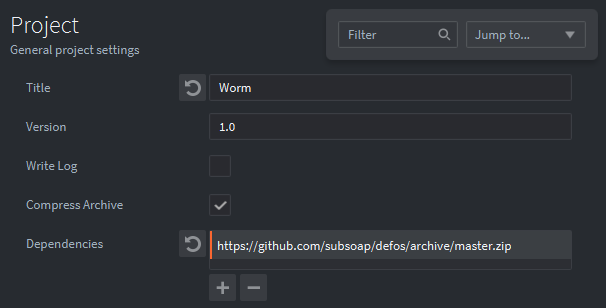
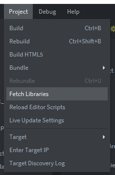
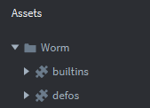

Tutorials for 2D games projects
Worm | Hiding the mouse.
It can be annoying when you are playing the game to see the mouse pointer on the screen. Unfortunately to click the 1up or 2up buttons it is necessary to have the mouse visible. On a touch-screen device we could use touch triggers, and in the extension activities we'll include additional key bindings to use the 1 and 2 keys as alternative inputs.
Defold doesn't have any native commands to hide or show the mouse pointer. Fortunately, it does support external libraries so we can include these in our development to extend the capabilities of Defold.
Libraries allow you to share code between projects and include routines other people have written.
This part of the tutorial assumes you can access Github. If permissions prevent you from doing this you will need to skip this stage.
- In the assets panel, double click, 'game.project'.
- In the 'Project' section there is a place to add, 'Dependencies'. Click the + icon, delete the default text and enter, 'https://github.com/subsoap/defos/archive/master.zip'

- On the menu bar, select, 'Project', 'Fetch Libraries'.

You should now see defos as a library in the assets panel.

- In the assets panel, double click, 'main.script'.
- In the on_message function, underneath the line, 'msg.post("game:/food#food","spawn_food")', enter a command to hide the mouse.
defos.set_cursor_visible(false)
Uses a method set_cursor in the defos library.
We must remember to enable the mouse again when the title screen is shown!
- In the update function, underneath the line, 'self.current_collection = "#title_proxy"', enter a new line to enable the mouse.
defos.set_cursor_visible(true)
- Save the changes by pressing CTRL-S or 'File', 'Save All'.
- Run the program by pressing F5 or choosing, 'Debug', 'Start / Attach' from the menu bar. It should now hide the mouse pointer when the game is being played.

That's the core mechanics done but there is plenty more we can achieve to add some sparkle to the game. Stage 9 >
 Craig'n'Dave | Version 1.3
Craig'n'Dave | Version 1.3